1 Data visualization
Exercises 1.2.5
1.0.1 Question 1
How many rows are in
penguins? How many columns?
Solution:
Code
library(tidyverse)
library(palmerpenguins)
glimpse(palmerpenguins::penguins)Rows: 344
Columns: 8
$ species <fct> Adelie, Adelie, Adelie, Adelie, Adelie, Adelie, Adel…
$ island <fct> Torgersen, Torgersen, Torgersen, Torgersen, Torgerse…
$ bill_length_mm <dbl> 39.1, 39.5, 40.3, NA, 36.7, 39.3, 38.9, 39.2, 34.1, …
$ bill_depth_mm <dbl> 18.7, 17.4, 18.0, NA, 19.3, 20.6, 17.8, 19.6, 18.1, …
$ flipper_length_mm <int> 181, 186, 195, NA, 193, 190, 181, 195, 193, 190, 186…
$ body_mass_g <int> 3750, 3800, 3250, NA, 3450, 3650, 3625, 4675, 3475, …
$ sex <fct> male, female, female, NA, female, male, female, male…
$ year <int> 2007, 2007, 2007, 2007, 2007, 2007, 2007, 2007, 2007…There are 344 rows and 8 columns in the dataset.
1.0.2 Question 2
What does the
bill_depth_mmvariable in thepenguinsdata frame describe? Read the help for?penguinsto find out.
Solution:
The
bill_depth_mmvariable describes the depth of the penguin’s bill in millimeters. To get a visual representation of the penguin’s beakdimensions, an image is shown below.bill_depth_mmis self explanatory unless you dont understand what bill means. A penguin’s bill is simply its beak.

1.0.3 Question 3
Make a scatterplot of
bill_depth_mmVS.bill_length_mm. That is, make a scatterplot withbill_depth_mmon the y-axis andbill_length_mmon the x-axis. Describe the relationship between these two variables.
Solution:
The goal was to create a scatter plot of
bill_lengthversusbill_depthand infer the relationship between these variables.During this quick visualization task, and after examining the first figure (Overall, the left one), it turned out there was no relationship e.g. suggesting that the longer a penguin’s bill is, the thicker it gets…
Instead, there was a clustering effect: two distinct clusters were visible, with a third one overlapping one of the first two. This piqued my curiosity about the second figure, and it seems my intuition was on point, accurate and informative.
Now that we have the second graph (the right one), we can see that each penguin species shares fairly distinct, common characteristics.
Code
ggplot(data = palmerpenguins::penguins,
mapping = aes(x = bill_length_mm, y = bill_depth_mm)) +
geom_point() +
labs(title = "Bill Depth vs. Length (Overall)", x = "Bill Length (mm)", y = "Bill Depth (mm)")
ggplot(data = palmerpenguins::penguins,
mapping = aes(x = bill_length_mm, y = bill_depth_mm)) +
geom_point(mapping = aes(color = species)) +
labs(title = "Bill Depth vs. Length (By Species)", x = "Bill Length (mm)", y = "Bill Depth (mm)")+
theme(legend.position = "bottom")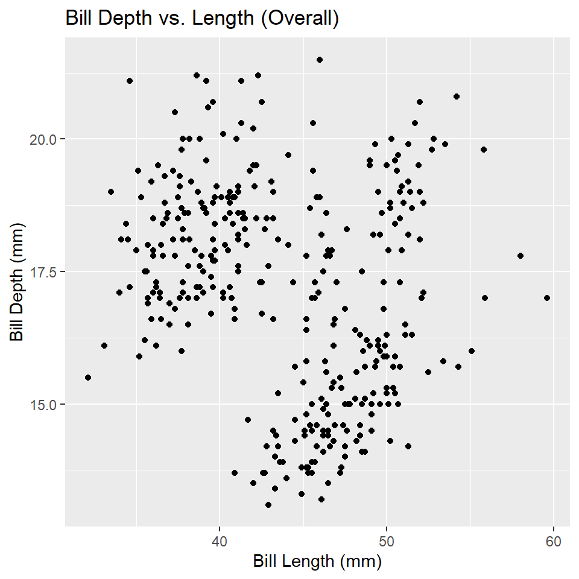
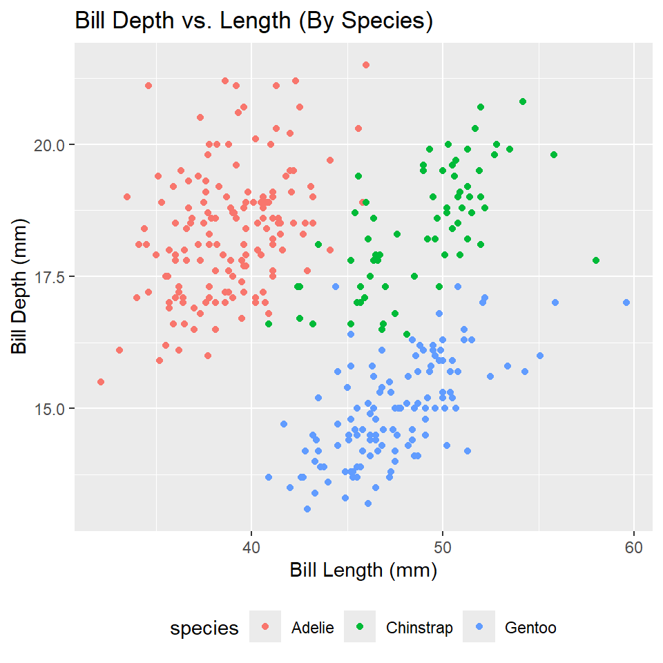
1.0.4 Question 4
What happens if you make a scatterplot of species vs. bill_depth_mm? What might be a better choice of geom?
Solution:
From left to right, the first figure directly answers the question. We notice that the observations are grouped along a vertical line for each species. As we can also see, there is a degree of overlap between these tightly packed observations.
It is expected to obtain this type of output, as ‘species’ is a categorical variable taking on only three values in this context. One way to bypass this issue is to introduce a new geom, namely
geom_jitter(), which adds a form of noise (vertical and/or horizontal) to better visualize these clusters `(as you can notice, ‘height’ is set to 0 to preserve the actual value of the numerical variable) i.e. : Only an horizontal noise was applied to the numerical variable.
This noise is applied horizontally to spread out the points and make the distribution more visible. The resulting plot will show the distribution of bill_depth_mm for each species with clearer separation between the points.
Code
ggplot(data = palmerpenguins::penguins,
mapping = aes(x = species, y = bill_depth_mm))+
geom_point()
ggplot(data = palmerpenguins::penguins,
mapping = aes(x = species, y = bill_depth_mm))+
geom_jitter(height = 0, width = 0.14, alpha = 0.5)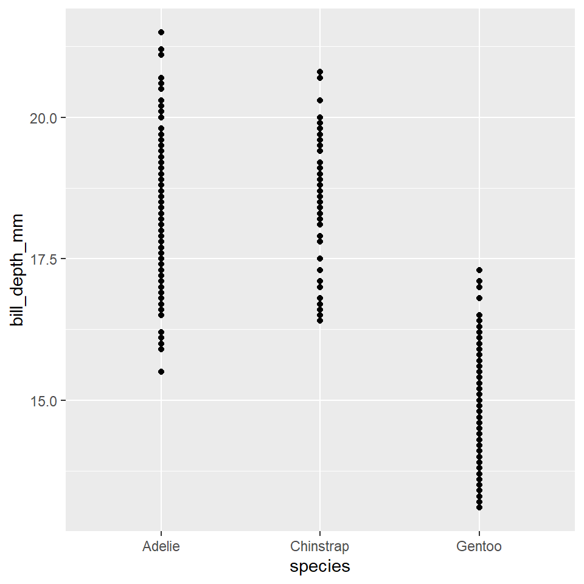
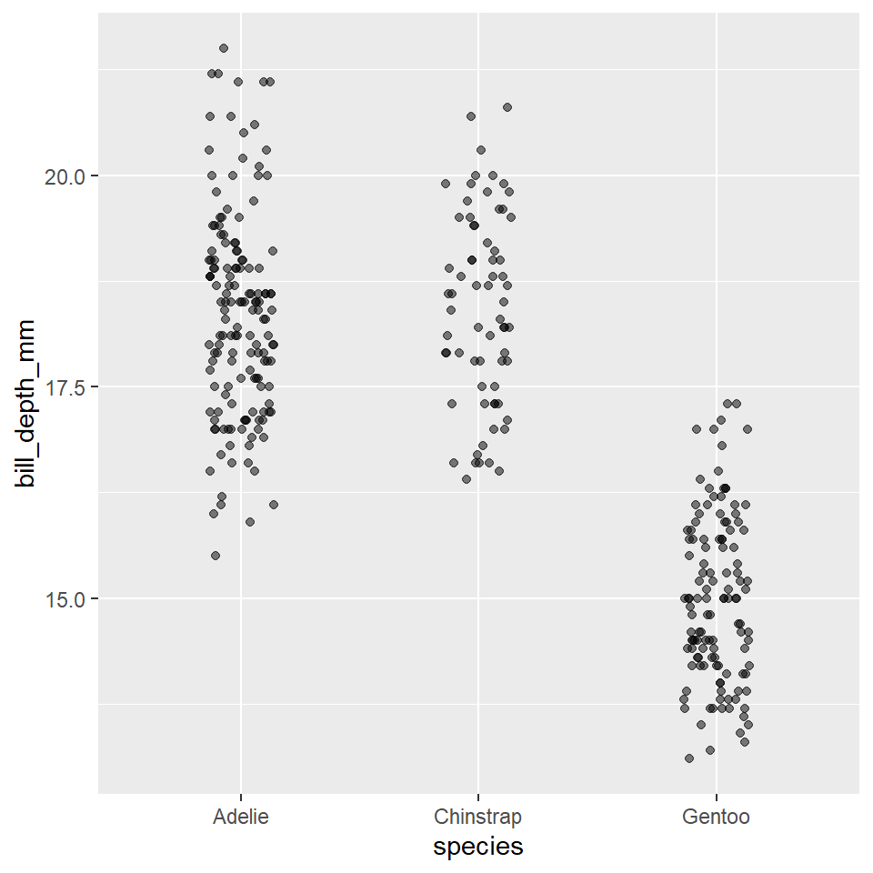
1.0.5 Question 5
Why does the following give an error and how would you fix it?
Solution:
When you run
ggplot(data = penguins) + geom_point(), R throws an error because noaes()mapping was defined either globally insideggplot()or locally insidegeom_point():
geom_point()requires aesthetic mappings—specifically x and y coordinates—to know where to plot the points on the 2D plane.
1.0.6 Question 6 & 7
What does the na.rm argument do in geom_point()? What is the default value of the argument? Create a scatterplot where you successfully use this argument set to TRUE.
Solution:
The
na.rmargument ingeom_point()is used to remove missing values (NA) from the data before plotting. If FALSE, the default, missing values are removed with a warning. If TRUE, missing values are silently removed.
Code
ggplot(data = palmerpenguins::penguins) +
geom_point(aes(x = bill_length_mm, y = bill_depth_mm), na.rm = TRUE) +
labs(caption = "Data come from the palmerpenguins package.")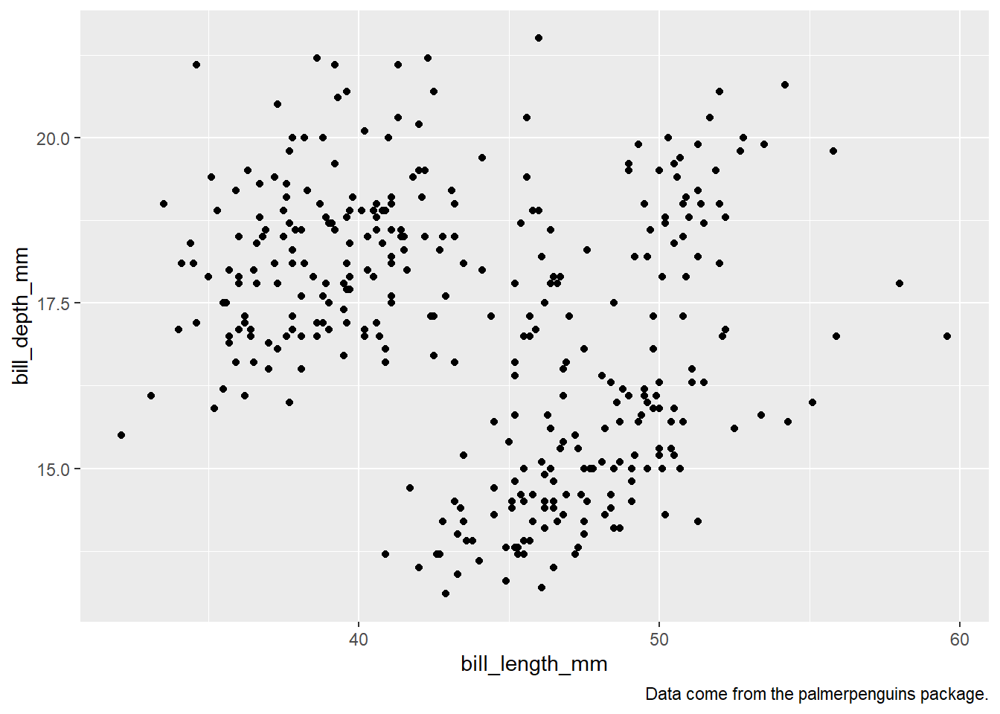
1.0.7 Question 8
Recreate the following visualization. What aesthetic should bill_depth_mm be mapped to? And should it be mapped at the global level or at the geom level?
Solution:
Why Both Codes Produce the Exact Same Output ?
At first glance, you might expect Code 1 to draw multiple trend lines (one for each color) because color = bill_depth_mm is placed inside the global ggplot() aesthetic mapping. However, both snippets render an identical plot: a single overall smooth line over points colored by a gradient scale.
This is the key reason:
bill_depth_mmis a continuous numerical variable, not a discrete categorical variable (likespecies).
When you map a categorical variable (e.g.,
color = species) globally,geom_smooth()automatically splits the dataset into distinct groups (Adelie, Chinstrap, Gentoo) and fits three separate trend lines.When you map a continuous numerical variable (e.g.,
color = bill_depth_mm),ggplot2treats the data as a single continuous distribution rather than discrete subgroups.
Code
#code 1
ggplot(data=palmerpenguins::penguins,
mapping = aes(x = flipper_length_mm, y = body_mass_g, color=bill_depth_mm))+
geom_point()+
geom_smooth(method='loess')
#code 2
ggplot(data=palmerpenguins::penguins,
mapping = aes(x = flipper_length_mm, y = body_mass_g))+
geom_point(aes(color=bill_depth_mm))+
geom_smooth(method='loess')
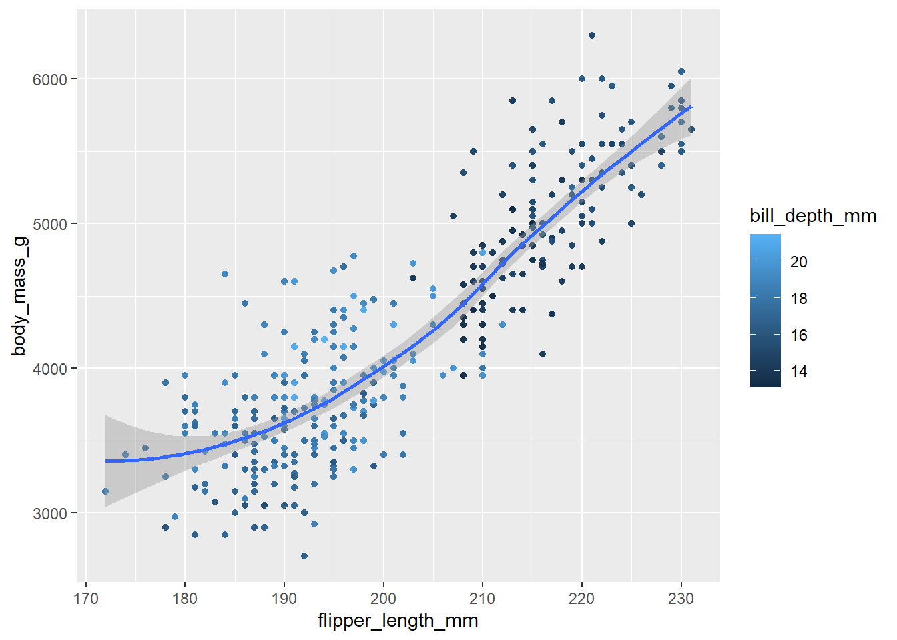
1.0.8 Question 9
Run the code in your head and predict what the output will look like. Then, run the code in R and check your predictions.
Solution:
This code seems quite straightforward to predict, especially after reading the current chapter and doing the previous exercises: it’s a scatter plot of two numerical variables with the addition of a distinction, using colors, based on the island of origin.
Furthermore, we also expect three lines to be drawn via
geom_smooth(), since a categorical variable (island) was introduced globally. Finally, theseargument is set toFALSE, which prevents the confidence interval bands from showing around the lines.
Code
ggplot(
data = palmerpenguins::penguins,
mapping = aes(x = flipper_length_mm, y = body_mass_g, color = island)
) +
geom_point() +
geom_smooth(se = FALSE)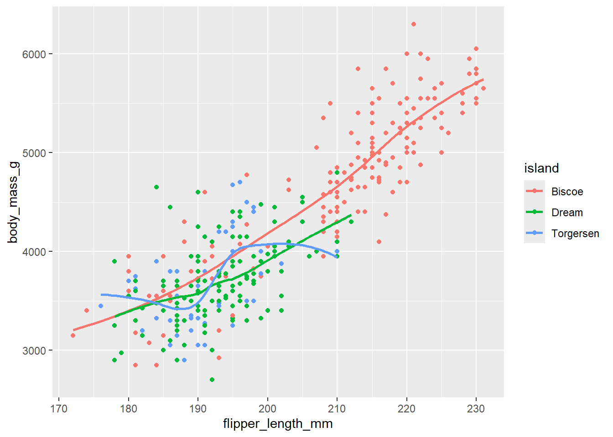
1.0.9 Question 10
Will these two graphs look different? Why/why not?
Solution:
As we run the code, the two graphs looks the same. Becasue,
geom_pointandgeom_smoothinheritsimplicitlythe mapping from the global aesthetics. The code that follows does it simplyexplicitly.
Code
#Implicitly
ggplot(
data = palmerpenguins::penguins,
mapping = aes(x = flipper_length_mm, y = body_mass_g)
) +
geom_point() +
geom_smooth()
#Explicitly
ggplot() +
geom_point(
data = palmerpenguins::penguins,
mapping = aes(x = flipper_length_mm, y = body_mass_g)
) +
geom_smooth(
data = palmerpenguins::penguins,
mapping = aes(x = flipper_length_mm, y = body_mass_g)
)
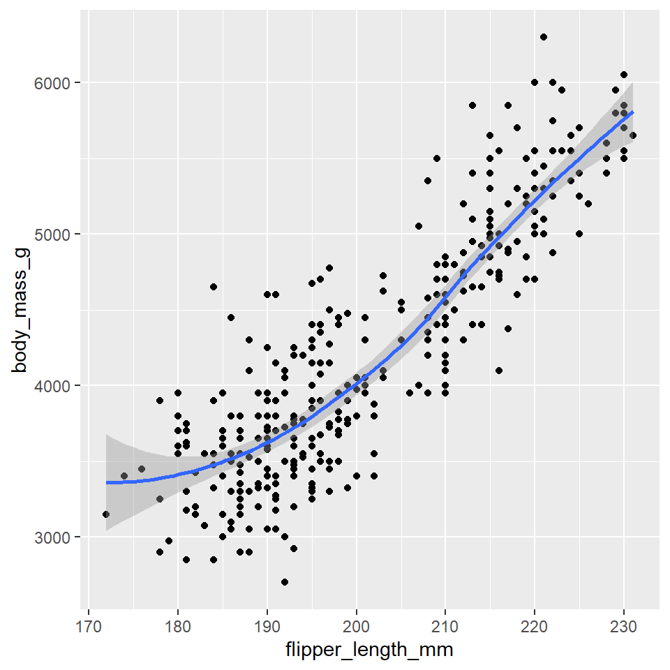
Exercises 1.4.3
1.0.10 Question 1
Make a bar plot of species of penguins, where you assign species to the y aesthetic. How is this plot different?
Solution:
This plot is a horizontal bar chart where the species are on the y-axis and the count of penguins on the x-axis. It is different from a vertical bar chart, where the species would be on the x-axis.
Code
ggplot(palmerpenguins::penguins, aes(y = species)) +
geom_bar()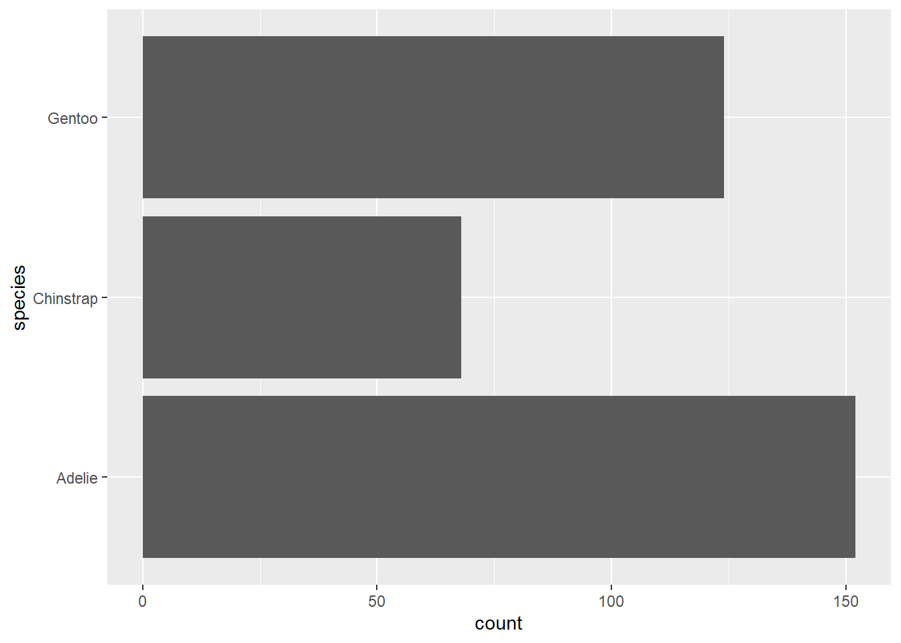
1.0.11 Question 2
How are the following two plots different? Which aesthetic, color or fill, is more useful for changing the color of bars?
Solution:
Code
ggplot(palmerpenguins::penguins, aes(x = species)) +
geom_bar(color = "red")
ggplot(palmerpenguins::penguins, aes(x = species)) +
geom_bar(fill = "red")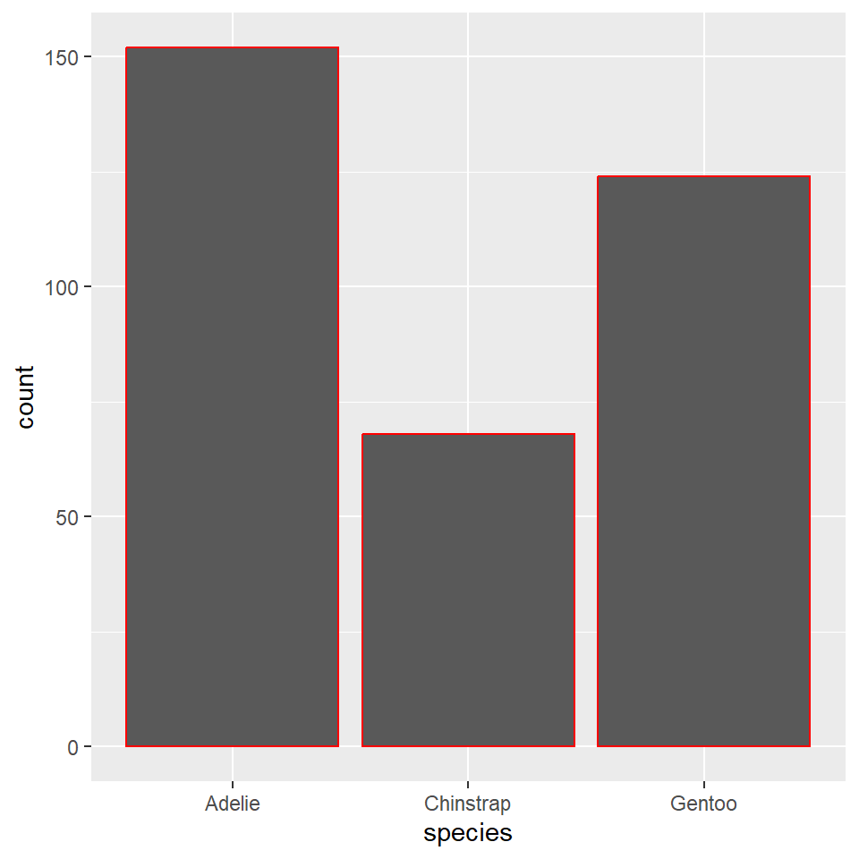
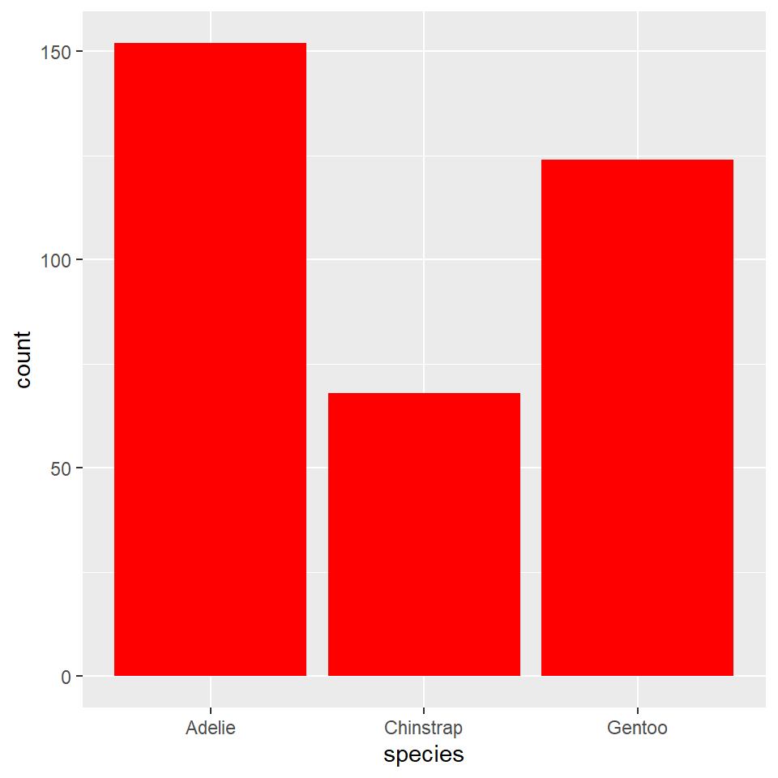
1.0.12 Question 3
What does the
binsargument ingeom_histogram()do?
Solution:
The bins argument in geom_histogram() sets the total number of equal-width bars used to divide and display the distribution of your data on the x-axis.
1.0.13 Question 4
Solution:
Here is a
tipto find and set directly the most useful and interesting bindwidths : we start by plotting the density of our variablecaratusinggeom_density()function and then start to inspect the range of values that takes our variable on the x-axis. As you can see thecaratvariable takes values starting fromzerotofive. Therfore, it is thoughfully proper to set the bins/binwidth argument to a value that divides this range into a reasonable number of intervals. For exmaple, setting in this example, bindwidth to 10 will generates an histogram with a single bloc and such a thing doesn’t show the distribution of our variable.
Code
ggplot(diamonds, aes(x = carat)) +
geom_density()
ggplot(diamonds, aes(x = carat)) +
geom_histogram(binwidth = 0.1)
ggplot(diamonds, aes(x = carat)) +
geom_histogram(binwidth = 10)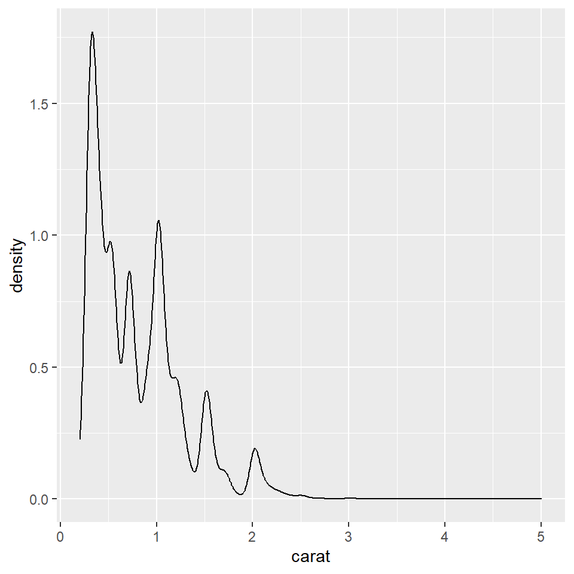
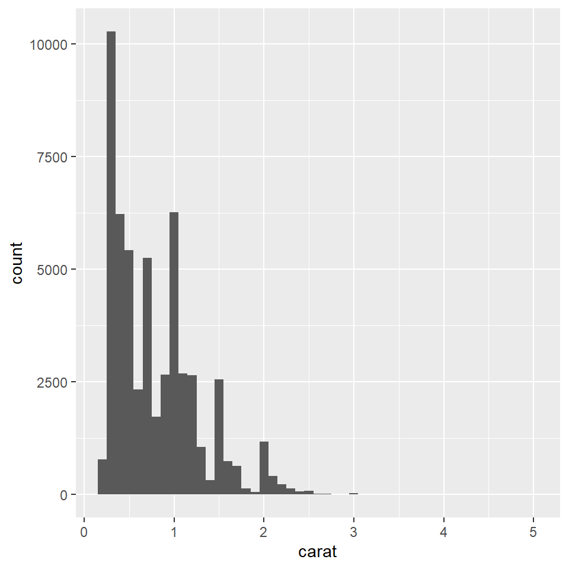
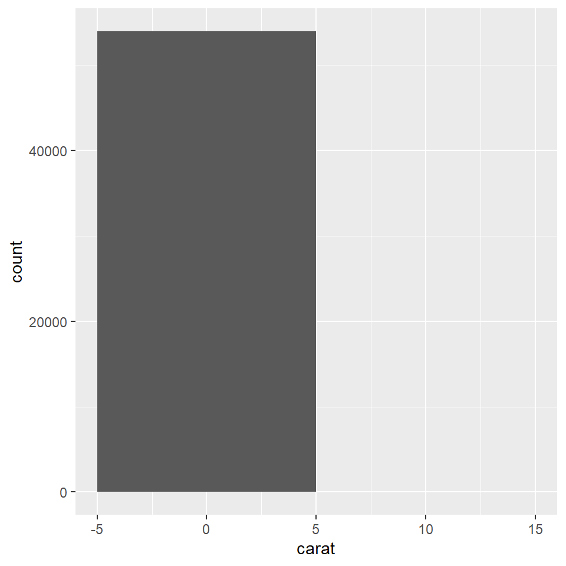
Exercises 1.5.5
1.0.14 Question 1
The
mpgdata frame that is bundled with the ggplot2 package contains 234 observations collected by the US Environmental Protection Agency on 38 car models. Which variables inmpgare categorical? Which variables are numerical? (Hint: Type?mpgto read the documentation for the dataset.) How can you see this information when you runmpg?
Solution:
To detect categorical variables in a dataset, you look for columns containing text labels, repeating distinct values, or discrete data that represent groups or categories.
Here variables such as class, manufacturer, year(only two values are present in the mpg dataset), class… are categorical variables. displ,cty & hwy are numerical variables. Here is a code snippet that performs an initial rough separation of these two types of variables. After that, only a human quick and minor check remains.
Code
# Initialize an empty vector
L <- c()
# Loop through column names
for (col in colnames(mpg)) {
if (length(unique(mpg[[col]])) <= 15) {
L <- c(L, col)
}
}
# Print matching columns
for (catg in L) {
print(catg)
}[1] "manufacturer"
[1] "year"
[1] "cyl"
[1] "trans"
[1] "drv"
[1] "fl"
[1] "class"1.0.15 Question 2
Make a scatterplot of
hwyvs.displusing thempgdata frame. Next, map a third, numerical variable tocolor, thensize, then bothcolorandsize, thenshape. How do these aesthetics behave differently for categorical vs. numerical variables?
Solution:
When mapping a numerical variable to these aesthetics in
ggplot2, they generatecontinuous gradients. When mapping a categorical variable, they generatediscrete setsof distinct values.
Shape:ggplot2does not allow mapping continuous numerical variables to shape. Shape is a discrete aesthetic, limited to a small set of symbols. Attempting to map a numerical variable to shape will result in an error.
Code
ggplot(data = mpg, aes(x = hwy, y = displ)) +
geom_point() +
labs(title = "Scatterplot of hwy vs. displ")
ggplot(data = mpg, aes(x = hwy, y = displ, color = cty)) +
geom_point() +
labs(title = "Scatterplot of hwy vs. displ")
ggplot(data = mpg, aes(x = hwy, y = displ, color = cty, size = cty)) +
geom_point() +
labs(title = "Scatterplot of hwy vs. displ")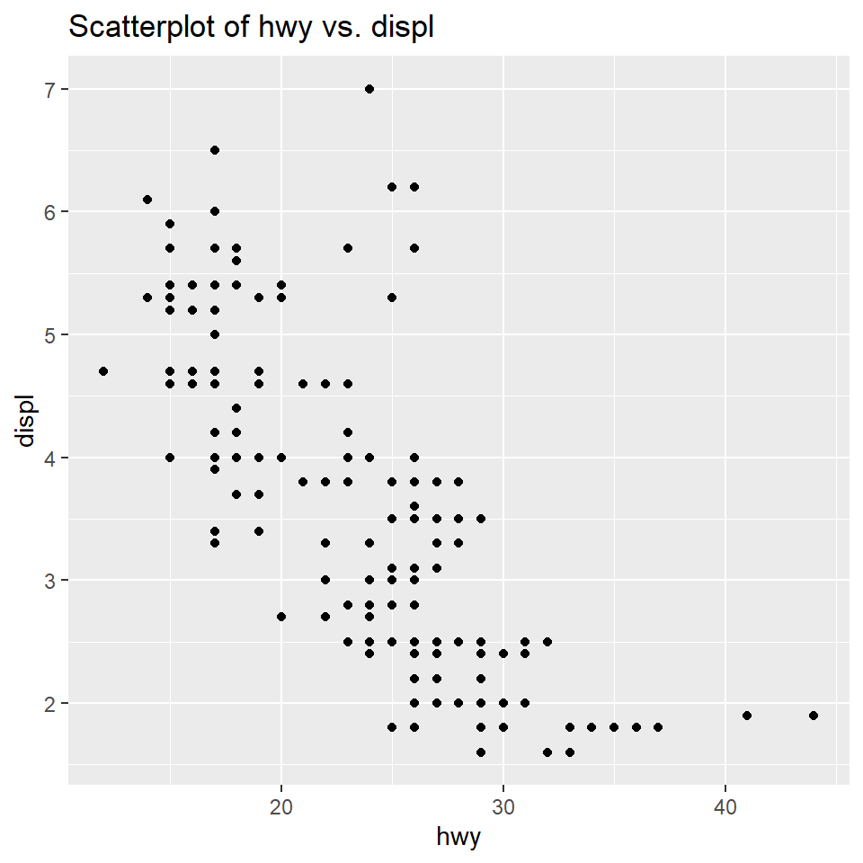
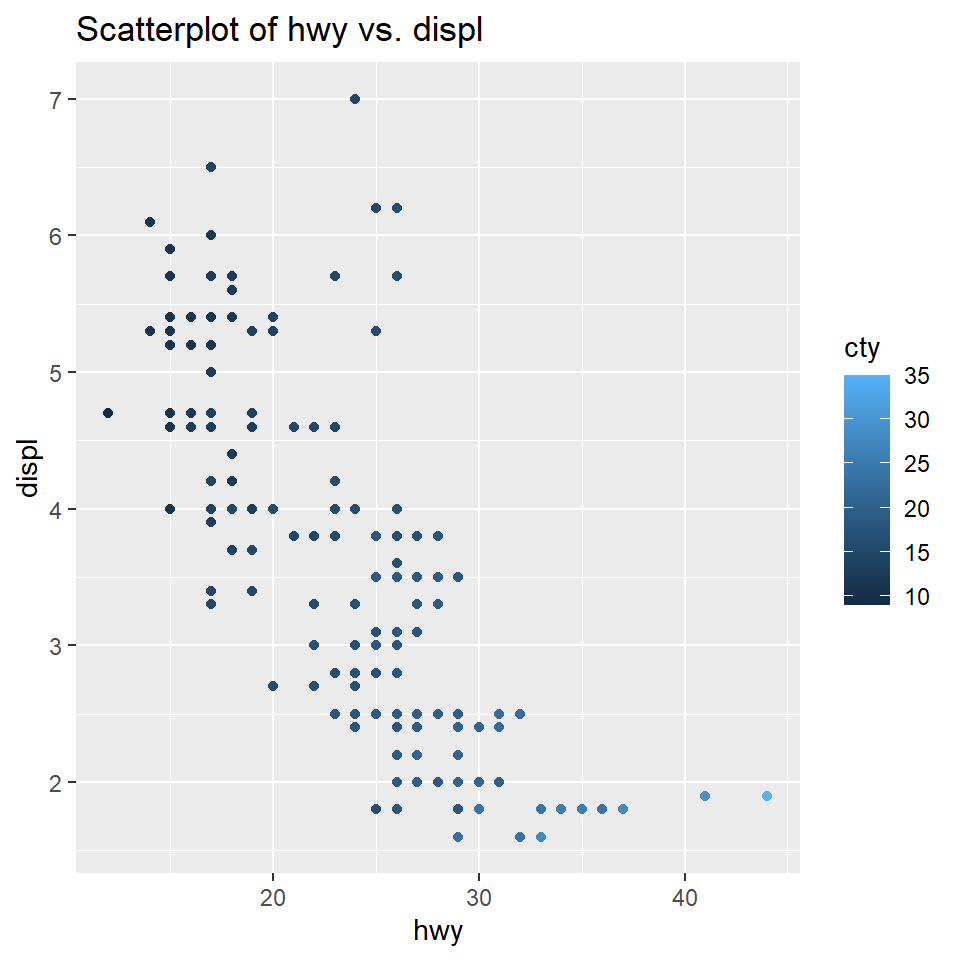
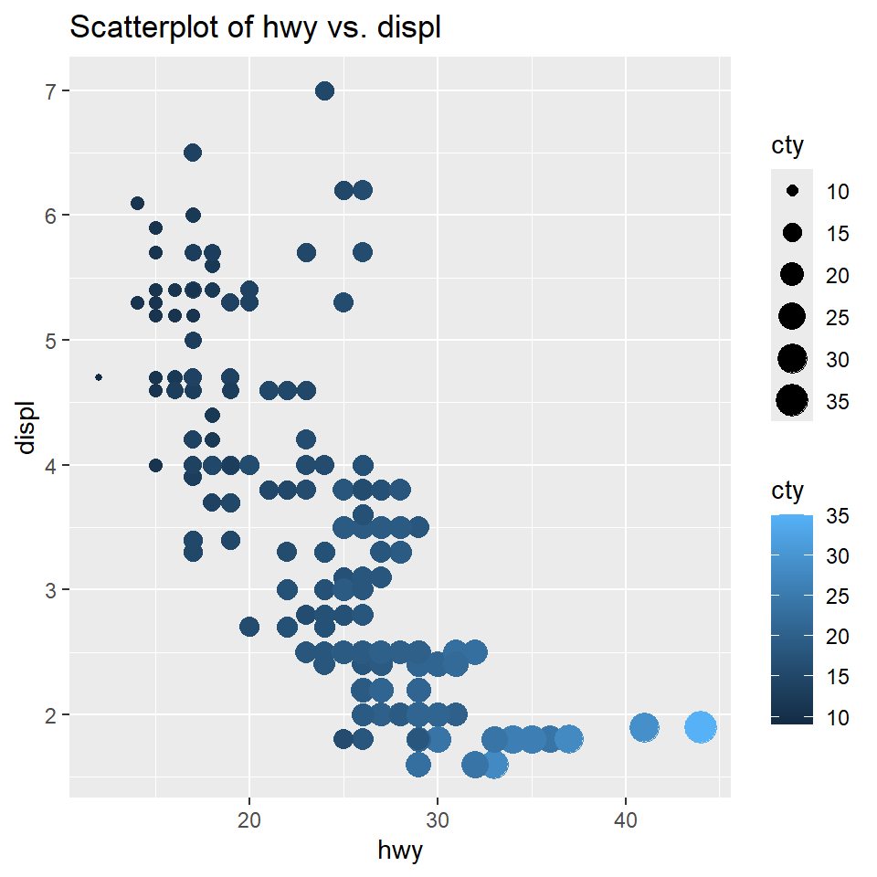
1.0.16 Question 3
In the scatterplot of
hwyvs.displ, what happens if you map a third variable tolinewidth?
Solution:
In a standard scatterplot created with geom_point(),
nothing visiblewill happen if you map a variable to the linewidth aesthetic.The linewidth aesthetic is designed to control the thickness of lines, such as those generated by
geom_line()orgeom_smooth().
1.0.17 Question 5
Make a scatterplot of
bill_depth_mmvs.bill_length_mmand color the points byspecies.What does adding coloring by species reveal about the relationship between these two variables? What about faceting byspecies?
Solution:
Upon inspecting the graph, we notice that (within each species) as the penguins’ bill depth increases, their bill length also gains in length. This is something we might have missed revealing had we not introduced the third categorical variable (species).
Adding faceting by species reveals that the relationship between bill depth and bill length is consistent across species, but with some variation in the scale of the relationship. This suggests that while there is a general positive correlation between bill depth and bill length, the magnitude of this relationship may differ slightly between species.
Another potential explanation of this positive relationship would be that penguins simply when they grow up develop gradually bigger and thicker bills (Saying so : we suppose that our data contains maybe baby penguins along with adults ones).
Code
ggplot(data = palmerpenguins::penguins,
mapping = aes(x = bill_depth_mm, y = bill_length_mm, color = species)) +
geom_point()+
facet_wrap(~species)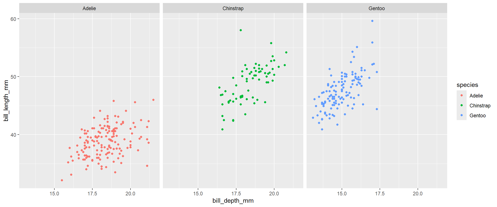
1.0.18 Question 6
Why does the following yield two separate legends? How would you fix it to combine the two legends?
Solution:
First thing, let’s remove the labs function and see what it does. We seem to have a single legend (
colorandshape) namedspecieswith alowercase's': And that’s what we slightly want. Now to explain the behaviour of the code, we notice that labs labels the legend of color palette as'Species'without explicitly labeling the shape which was creadted by default as'species'and that’s why we have two legends. Finally, if we want to label and combine them into one single legend as'Species'(with an uppercase ‘S’) we simply use the code below.
Code
ggplot(
data = palmerpenguins::penguins,
mapping = aes(
x = bill_length_mm, y = bill_depth_mm,
color = species, shape = species
)
) +
geom_point() +
labs(color = "Species",
shape = "Species")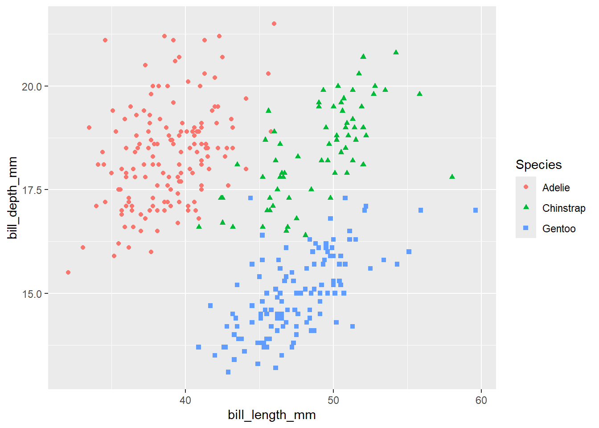
1.0.19 Question 7
Create the two following stacked bar plots. Which question can you answer with the first one? Which question can you answer with the second one?
Solution:
Left bar pot :
what species of penguins we find one each island and what are their presence distribution ?
Right bar plot :
In which island we find every type of species ? and if a specie is present on two or more island : what are the percentages of presence?
Code
ggplot(penguins, aes(x = island, fill = species)) +
geom_bar(position = "fill")+
labs(y = "proportion")
ggplot(penguins, aes(x = species, fill = island)) +
geom_bar(position = "fill")+
labs(y = "proportion")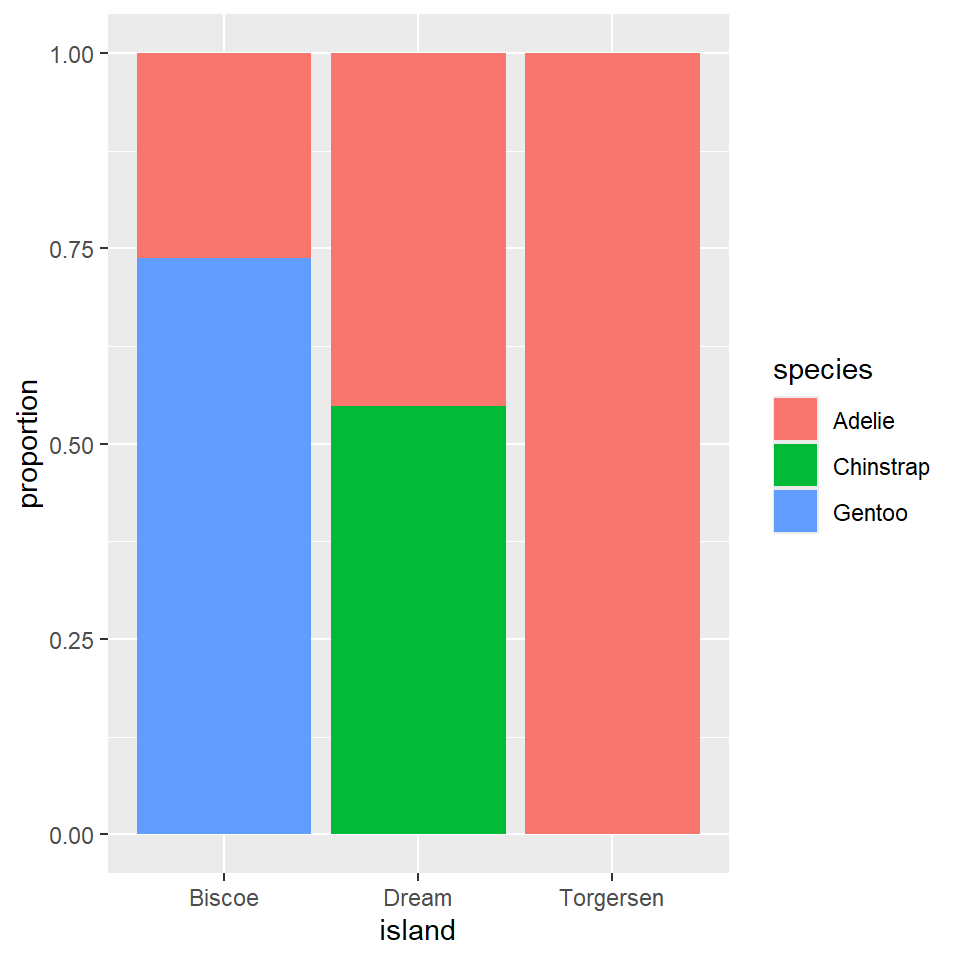
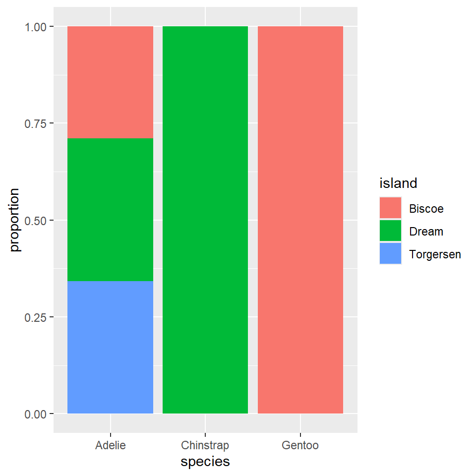
Exercises 1.6.1
1.0.20 Question 1
Run the following lines of code. Which of the two plots is saved as
mpg-plot.png?Why?
Solution:
Code
ggplot(mpg, aes(x = class)) +
geom_bar()
ggplot(mpg, aes(x = cty, y = hwy)) +
geom_point()
#ggsave("mpg-plot.png")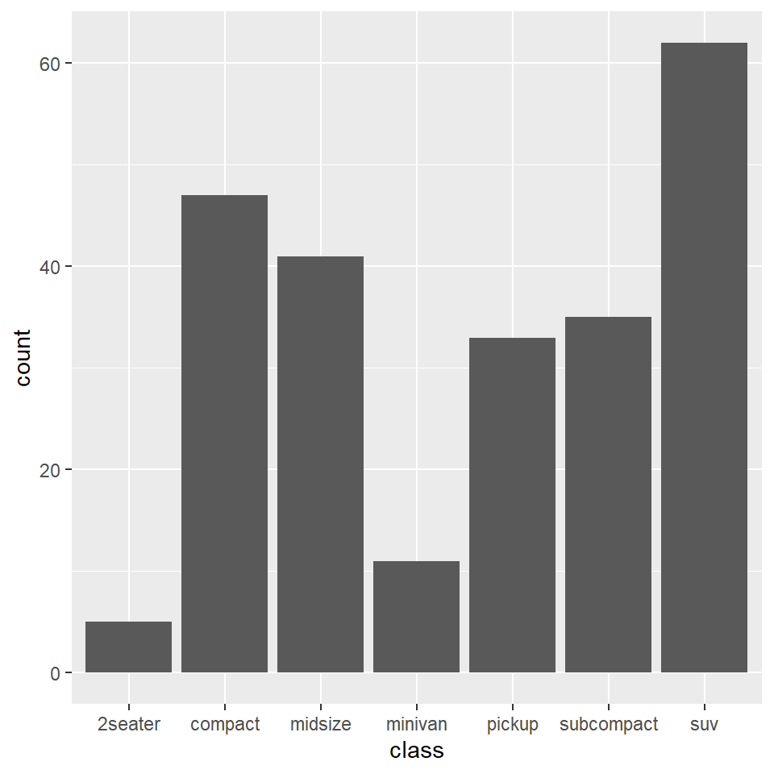

We notice after running the code that the
lastplot that is saved as.png imageis actually thescatter plot;
1.0.21 Question 2
What do you need to change in the code above to save the plot as a
PNG? How could you find out what types of image files would work in ggsave()?
Solution:
You need to change the file extension from
.pngtoggsave()function. For example, instead ofggsave("mpg-plot.png"), useggsave("mpg-plot.pdf"). To find out what types of image files would work inggsave(), you can check the documentation forggsave()or use the?ggsavecommand in R consol then navigate to the argument section and look for thedeviceargument.